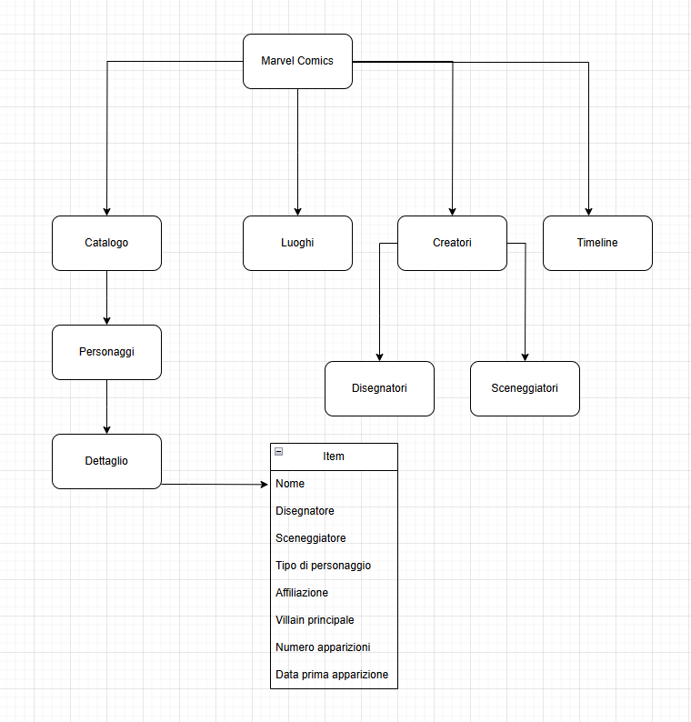

Web Project Plan
Idea
Il progetto si propone di creare una piattaforma digitale dedicata agli appassionati dei personaggi più iconici della Marvel Comics. L'obiettivo è offrire un'esperienza coinvolgente e informativa, permettendo agli utenti di esplorare in dettaglio le storie, le origini e le evoluzioni dei loro supereroi e supercriminali preferiti.
1. Brief
1.1 Finalità
Il progetto si propone di realizzare un catalogo digitale dedicato ai principali personaggi Marvel Comics, includendo eroi, villain e figure iconiche che hanno segnato la storia del fumetto americano. L’obiettivo è offrire una risorsa accessibile, ordinata e ricca di contenuti testuali e visivi per approfondire l’universo Marvel e la sua evoluzione nel tempo.
1.2 Pubblico
Il sito è pensato principalmente per gli appassionati di fumetti, in particolare i fan dell’universo Marvel. Tuttavia, anche i curiosi o nuovi lettori possono esplorare i contenuti in maniera semplice e coinvolgente. Accesso libero e semplice, senza autenticazione.
1.3 Accesso
La piattaforma è stata progettata per essere responsive e fruibile da qualsiasi dispositivo: desktop, tablet e smartphone. Grazie all’utilizzo del framework Bootstrap e a uno stile visivo semplice e funzionale, il sito garantisce una navigazione fluida e accessibile a tutti. Ottimizzato per immagini e contenuti leggeri.
1.4 Contenuti e Dati
Immagini da Google. Schede con superpoteri, esordio, descrizione. HTML5/CSS3 e componenti interattivi. Una particolare attenzione è stata riservata alla classificazione dei personaggi (tramite creatori, anno, poteri) per offrire un'esperienza di consultazione ordinata e personalizzabile.
2. Benchmark
2.1 Situazione Attuale
Attualmente esistono diversi siti dedicati ai personaggi della Marvel Comics. Tuttavia, spesso sono generalisti, coprendo notizie, fumetti, film e merchandising in modo ampio, senza concentrarsi in maniera approfondita sui dettagli, storie o approfondimenti specifici dei singoli personaggi. Il nuovo sito punta a profondità e interattività. Altra funzionalità molto importante è quella di interazione sociale e forum, come quelle usate da Reddit o dai forum di Fandom, può essere integrata per creare un forte senso di comunità tra gli utenti.
2.2 Servizi Riutilizzabili
Diversi progetti online offrono architetture modulari, interfacce intuitive e strumenti che possono essere riutilizzati. Per esempio, Fandom Marvel usa interfacce ideali per esplorazioni approfondite, che potrebbero essere adattate per migliorare l'esperienza utente in un progetto dedicato ai personaggi.
2.3 Analisi Concorrenti
- Marvel.com
Sito ufficiale con sezioni dedicate a fumetti, personaggi, film e merchandising. Include schede riassuntive per ogni personaggio, con dettagli base. Grafica professionale e navigazione semplice ma superficiale in termini di approfondimento narrativo.
Mancanza di traduzione in lingua italiana. Scarso coinvolgimento interattivo per l’utente medio che desidera una visione generale del personaggio e piccole curiosità. Caricamento lento delle immagini e dei contenuti multimediali. - Marvel Fandom (marvel.fandom.com)
Wiki amatoriale molto dettagliata su personaggi, storie e universi paralleli. Comunità molto attiva e contenuti costantemente aggiornati dagli utenti. Interfaccia ricca di informazioni, ma a volte dispersiva per l’utente inesperto.
Sovrabbondanza di informazioni non sempre organizzate in modo intuitivo. Qualità e affidabilità dei contenuti variabile perché generati dagli utenti senza supervisione professionale. Navigabilità del sito poco chiara
3. Struttura
3.1 Mappa Concettuale
3.2 Schema Dipendenze
marvel-comics/
├── index.html
├── catalogo.html
├── luoghi.html
├── personaggi/
│ └── ironman.html
├── styles.css
├── images/
│ └── Marvel/
│ └── timeline/
│ └── [immagini]
3.3 Categorie Descrittive
Nome: Iron Man
Disegnatore: Stan Lee
Sceneggiatore: Larry Lieber
Descrizione: Tony Stark, inventore miliardario...
Tipo: Supereroe
Affiliazione: Avengers
Villain Principale: Mandarino
Editore: Marvel Comics
Data: 1963/03/01
4. Layout
5. Usabilità
5.1 Navigazione
- Il layout si basa su griglie responsive fornite da Bootstrap, garantendo una buona adattabilità su dispositivi mobili e desktop.
- Ogni personaggio è racchiuso in una card, rendendo il contenuto visivamente ordinato e facilmente navigabile.
- È adottata una barra di navigazione fissa (sticky-top) che assicura l’accesso rapido alle sezioni principali del sito.
- Sono presenti breadcrumb per facilitare l’orientamento dell’utente e fornire contesto.
- La pagina "Catalogo" integra filtri avanzati a sinistra, tramite un sistema ad accordion, migliorando l’esplorazione dei contenuti.
5.2 Stile e leggibilità
- Font: Roboto
- I form di ricerca e filtri sono semplici, con etichette chiare e spazi adeguati per evitare clic errati.
- I bottoni sono ben visibili, con contrasto elevato (es. bianco su sfondo scuro).
- I pulsanti della paginazione includono lo stato attivo e disabilitato (.disabled) per indicare chiaramente le opzioni disponibili.
5.3 Colori, icone e font
- La palette di colori è coerente con l’identità Marvel: rosso, nero e bianco predominano.
- Lo sfondo scuro delle sezioni (navbar, footer, caroselli) aumenta la leggibilità e dà enfasi ai contenuti.
- Le icone Bootstrap (hamburger menu, caroselli) sono usate in modo chiaro e coerente
- Le immagini dei personaggi sono ad alta risoluzione e accompagnate da alt text descrittivi, migliorando accessibilità e SEO.
- Il font Roboto viene caricato da Google Fonts in modo asincrono (display=swap), ottimizzando le performance.
- È stato evitato l’uso di font multipli o pesanti, mantenendo la leggerezza del sito.
6. Servizi
6.1 Sistemi di Browsing aggiuntivi
- Filtri nel catalogo: alfabetico, uscita, disegnatori, sceneggiatori/li>
- Timeline della storia della Marvel Comics
- Button per tornare in cima alla navigazione
6.2 Tools
- Barra di ricerca
- Accordion per i filtri
- Caroselli dei personaggi
- Dropdown menu nella navbar
- Bottoni interattivi nelle card
6.3 Altri strumenti
- Accessibilità (screen reader, tastiera, ARIA)
- Esportazione PDF delle schede dei personaggi
- Integrazioni con API esterne
- Quiz giornalieri/settimanali per mantenere attiva la community
- Pannello "Esplora anche..."
7. Bibliografia e Sitografia
7.1 Fonti
- Wikipedia - Biografie e informazioni storiche sui personaggi Marvel.
- Marvel.com – Descrizioni ufficiali e dati editoriali dei fumetti.
- Google Immagini - Immagini dei personaggi
7.2 Strumenti
- Linguaggi : HTML5, CSS3
- Framework CSS : Bootstrap 5
- Libreria per timeline : KnightLab Timeline
- Wifreframes designer : Balsamiq
- Editor : Visual Studio Code
- Hosting : GitHub Pages